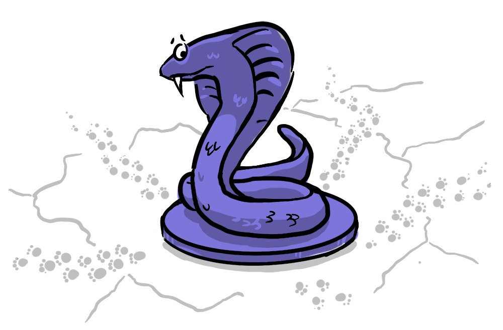
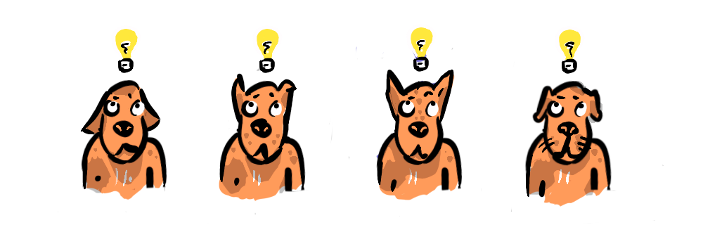
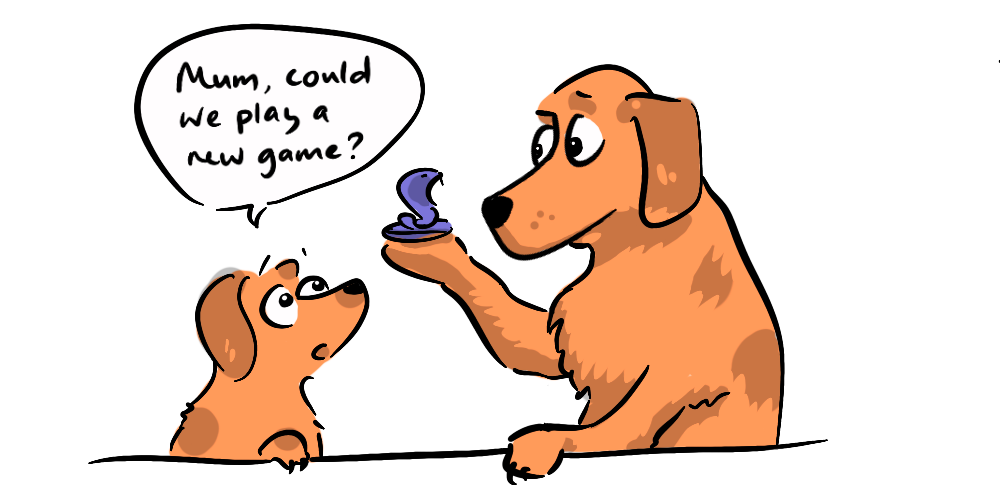
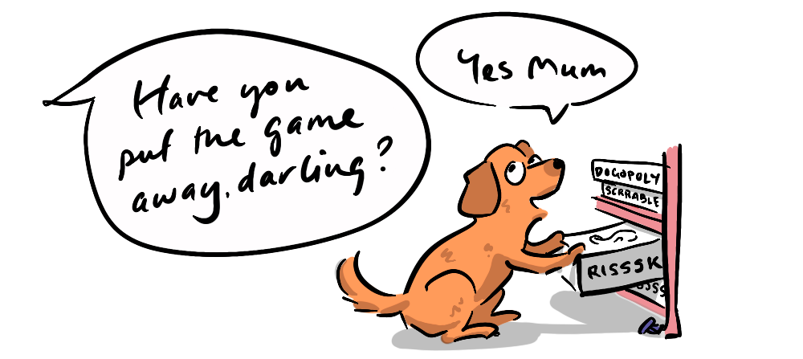

No Super-Defector exists in isolation. Over the next hill, through the forest, down the river, over the sea, are many other Super-Defectors, each inculcating their own form of cooperation into their subjects, each enjoying the fruits of their 'labour'. Just as John D. Rockefeller answered when asked how much is enough?: "Just a little more.", the Super-Defector sees their neighbours as more wealth and production to be brought under control. To this end, conflict between super-defectors arises.

Comparison can also be the thief of a Super-Defector's joy. Stark disparity between socio-economic conditions can promote migration between societies, as well as provide the impetus for revolution and reform. In this way, less destructive competition between Super-Defectors can also occur.
Economic productivity plays a crucial role in military success and in determining the conditions of a society. The cost of professional soldiers and their equipment, and of sustaining them often far from home, is substantial. Roman orator Cicero describes the "sinews of war" as simply "money in abundance" (Fifth Philippic). In this way, we would expect societal reform that moves the needle towards greater economic productivity to also correlate with greater military success.

But here we have what sounds more like an economic argument than anything to do with moral-emotional dispositions. How can one bear any relation to the other?
Innovation, creativity, and entrepreneurship underpin the most successful and competitive economic systems. Schumpeter, in Capitalism, Socialism, and Democracy (1942) coined the term 'Creative Destruction' to describe the driving force of these systems, characterised by new innovations continually replacing older ways and ideas, seeing our needs met with ever greater levels of productivity and comfort.
While Schumpeter argued that innovation was primarily the product of scientific advance mated to entrepreneurship, a kind of centralised institutional view, Phelps' Mass Flourishing (2013) argues that the strongest economic systems have innovation more widely distributed, at a grassroots level, throughout a population of capable, flourishing, free people.

Here we can begin to synthesise a moral/economic argument: Moral-emotional dispositions whose behavioural outcomes promote the recognition and maximisation of the potential of all people as potential innovators, and promote widespread flourishing, autonomy, and freedom, would, on the above account, likely produce greater economic outcomes, and hence greater societal competitiveness, than those that do not.
In this we see a positive moral outcome (positive, at least, to us modern cooperators) occurring alongside a positive economic outcome. This should help us harmonise our modern morality with economic productivity. It need not be one or the other.
While this moral/economic behaviour can be described in words, it is not simply a set of practical guidelines, nor a broader economic policy. This behaviour would pervade all of our interactions, underpinning nearly all of our practical and political decisions, broadly prescribing how we should treat others, how we should respond to the way others treat each other, and, most importantly, how we should teach (program) our young how to treat others.
Implementation of the economic system as a set of rules, without the deeper moral-emotional foundation, or without constant reinforcement, would likely fail in short order—recalling the stability benefits of moral programming to the Super-Defector. If it doesn't feel right, we'll likely do something else, unless prodded. In this sense our desired actions must harmonise with our inculcated behavioural dispositions to be made stable and sustainable.
One might imagine a movie montage beginning with a singular super-defector ruler and their many subjects, going to war, winning more subjects and lands. As time goes on their power devolves, first to a few, then to many, as more and more people are brought into the fold as co-super-defectors to maintain stability. At each stage greater economic productivity is achieved through the greater autonomy and distribution of economic management. In parallel, the benefits of having more capable and flourishing people in the economy becomes apparent and is promoted, or otherwise occurs. This gives rise to ever greater devolution of power to a rising technocratic/meritocratic order, again, as economic productivity increases. The Super-Defector incrementally loses their singular grip, being supplanted at each step by greater productivity and competitiveness. Slowly the stratification between those with lesser and greater power blurs, as it becomes no longer possible to sustain different moral considerations for different sets of people when anyone can succeed. Slowly but surely the number of co-super-defectors increases until we all have equal influence over the means of cooperation programming, that is, until everyone is a super-defector, at which point no one is a super-defector—we are all super-cooperators.

This is not, then, an argument for mere cooperation, for us to all just get along in peace. It is an argument for super-cooperation. To realise the potential of each other, even from a purely economic standpoint, and to work to create a society that maximises this above all else. All else will follow.
The story of morality is of course nothing like the montage above. The arrow of progress is not a straight line. Progress is rare, collapse is more common in the arc of human history. But this is the nature of evolution. Modern life is as much the product of random chance and circumstance as it is the product of unique competitive advantage and fitness. There is no ultimate form of economy or morality outside of the context of our species. But within our species, we can identify what brings from us the greatest economic value, and also a kind of flourishing and happy life characteristic of our form. It just so happens, or perhaps it follows, that these align.